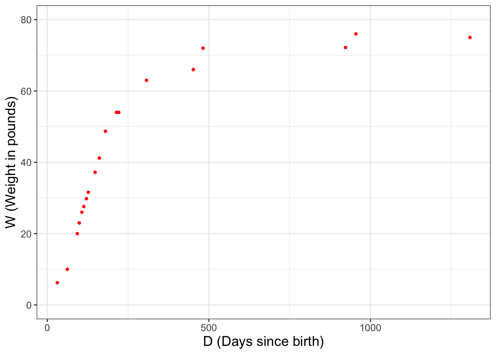
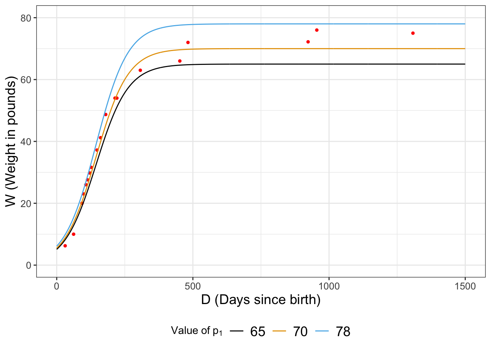

wilson_data_plot <- ggplot(data = wilson) +
geom_point(aes(x = days, y = weight), size = 1, color = "red") +
labs(
x = "D (Days since birth)",
y = "W (Weight in pounds)"
)
wilson_data_plot12 The Metropolis-Hastings Algorithm
Cost or likelihood functions (Chapters 9 and 10) are a powerful approach to estimate model parameters for a dataset. Bootstrap sampling (Chapter 11) is an efficient computational method to extend the reach of a dataset to estimate population level parameters. With all these elements in place we will discuss a powerful algorithm that will efficiently sample a likelihood function to estimate parameters for a model. Let’s get started!
Note
This chapter uses following libraries: ggplot2, and tibble (all part of the tidyverse) and demodelr. See Section 2.3 on how to install packages. Prior to running any code in this section, include library(tidyverse) and library(demodelr).
12.1 Estimating the growth of a dog
In Chapter 2 we introduced the dataset wilson, which reported data on the weight of the puppy Wilson as he grew, shown again in Figure 12.1. Because we will re-use the scatter plot in Figure 12.1 several times, we define the variable wilson_data_plot so we don’t have to re-copy the code over and over.1

Let \(D\) be the days since birth and \(W\) Wilson’s weight in pounds, Equation 12.1 is a model that describes Wilson’s weight over time:
\[ W =f(D,p_{1})= \frac{p_{1}}{1+e^{(p_{2}-p_{3}D)}} \tag{12.1}\]
Equation 12.1 has three different parameters \(p_{1}\), \(p_{2}\), and \(p_{3}\) to be estimated. For convenience we will set \(p_{2}= 2.461935\) and \(p_{3} = 0.017032\) and estimate \(p_{1}\), which for this model represents the long-term weight for Wilson, or a horizontal asymptote for Equation 12.1 (Exercise 12.2).
Let’s take an initial guess for the parameter \(p_{1}\). From Figure 12.1 a reasonable guess for \(p_{1}\) would be 78. As we did with Figure 12.1, we are going to store the updated plot as a variable. Try this code out on your own.
# Define a data frame for W = f(D,78)
days <- seq(0, 1500, by = 1)
p1 <- 78
p2 <- 2.461935
p3 <- 0.017032
weight <- p1 / (1 + exp(p2 - p3 * days))
my_guess_78 <- tibble(days, weight)
### Now add our guess of p1 = 78 to the plot.
my_guess_plot <- wilson_data_plot +
geom_line(
data = my_guess_78, color = "red",
aes(x = days, y = weight)
)
my_guess_plotPerhaps let’s try another guess for \(p_{1}\) a little lower than \(p_{1}=78\). Re-run the prior code, but this time set \(p_{1}=65\). Does that model better represent the wilson data?
12.2 Likelihood ratios for parameter estimation
We have two potential values for \(p_{1}\) (78 or 65). While you may be able to decide which parameter is better “by eye”, let’s discuss a way to quantify this some more. How we do that is with the likelihood function for these data. We will apply the standard assumptions that the nineteen measurements of Wilson’s weight over time are all independent and identically distributed, creating the following likelihood function (Equation 12.2):
\[ L(p_{1}) = \prod_{i=1}^{19} \frac{1}{\sqrt{2 \pi} \sigma} e^{-\frac{(W_{i}-f(D_{i},p_{1}))^{2}}{2 \sigma^{2}}} \tag{12.2}\]
We can easily compute the associated likelihood values for Equation 12.2 with the R function compute_likelihood from Chapter 9:
# Define the model we are using
my_model <- weight ~ p1 / (1 + exp(p2 - p3 * days))
# Define a tibble for the two different estimates of p1
parameters <- tibble(
p1 = c(78, 65),
p2 = 2.461935,
p3 = 0.017032
)
# Compute the likelihood and return the likelihood from the list
out_values <-
compute_likelihood(my_model, wilson, parameters)$likelihood
# Return the likelihood from the list:
out_values# A tibble: 2 × 5
p1 p2 p3 l_hood log_lik
<dbl> <dbl> <dbl> <dbl> <lgl>
1 78 2.46 0.0170 6.86e-29 FALSE
2 65 2.46 0.0170 1.20e-27 FALSE Hopefully this code seems familiar to you from Chapter 9, but of note are the following:
- We want to compare two values of
p1, so when we definedparameterswe included the two values of \(p_{1}\) when definingparameters. The same values ofp2andp3will apply to both. Don’t believe me? Typeparametersat the console line to see! - Recall that when we apply
compute_likelihooda list is returned (likelihoodandopt_value). For this case we just want thelikelihooddata frame, hence the code$likelihoodat the end ofcompute_likelihood.
So we computed \(L(78)\)=6.8560765^{-29} and \(L(65)\)=1.2038829^{-27}. Since \(L(65)>L(78)\) we would say \(p_{65}\) is the more likely parameter value.
Notice how we computed \(L(65)\) and \(L(78)\) separately and then compared the two values. Another approach is to examine the ratio of the likelihoods (Equation 12.3):
\[ \mbox{ Likelihood ratio: } \frac{ L(p_{1}^{proposed}) }{ L(p_{1}^{current}) } \tag{12.3}\]
The utility of the likelihood ratio is that we can say that if the likelihood ratio is greater than 1, \(p_{1}^{proposed}\) is preferred. If this ratio is less than 1, \(p_{1}^{current}\) is preferred.
Applying Equation 12.3 with \(p_{1}^{proposed}=65\) and \(p_{1}^{current}=78\), we have \(\displaystyle \frac{ L(65) }{ L(78) }=\) 18, further confirming \(p_{1}=65\) is more likely compared to the value of \(p_{1}=78\).
12.2.1 Iterative improvement with likelihood ratios
We can improve on estimating \(p_{1}\) for Equation 12.1 by continuing to compute likelihood ratios. However, since \(p_{1}=65\) is the more likely value (currently), then we will set \(p_{1}^{current}=65\) for Equation 12.3.
To simplify things, let’s define a function that will quickly compute Equation 12.1 for this dataset:
# A function that computes the likelihood ratio for Wilson's weight
likelihood_ratio_wilson <- function(proposed, current) {
# Define the model we are using
my_model <- weight ~ p1 / (1 + exp(p2 - p3 * days))
# This allows for all the possible combinations of parameters
parameters <- tibble(
p1 = c(current, proposed),
p2 = 2.461935,
p3 = 0.017032
)
# Compute the likelihood and return the likelihood from the list
out_values <-
compute_likelihood(my_model, wilson, parameters)$likelihood
# Return the likelihood from the list:
ll_ratio <- out_values$l_hood[[2]] / out_values$l_hood[[1]]
return(ll_ratio)
}
# Test the function out:
likelihood_ratio_wilson(65, 78)[1] 17.55936You should notice that the reported likelihood ratio matches up with our earlier computations! Perhaps a better guess for \(p_{1}\) would be somewhere between 65 and 78. Let’s try to compute the likelihood ratio for \(p_{1}=70\) compared to \(p_{1}=65\). Try computing likelihood_ratio_wilson(70,65) - you should see that it is about 7.5 million times more likely!
I think we are onto something - Figure 12.2 compares the modeled values of Wilson’s weight for the different parameters:

So now, let’s try \(p_{1}=74\) and compare the likelihoods: \(\displaystyle \frac{ L(74) }{ L(70) }\)=4.5897793^{-9}. This seems to be less likely because the ratio was significantly less than one. If we are doing a hunt for the best optimum value, then perhaps we would reject \(p_{1}=74\) and keep moving on, perhaps selecting another value closer to 70.
While rejecting \(p_{1}=74\) as less likely, a word of caution is warranted. For non-linear problems we want to be extra careful that we do not accept a parameter value that leads us to a local (not global) optimum. A way to avoid this is to compare the calculated likelihood ratio to a uniform random number \(r\) between 0 and 1.
At the R console type runif(1) - this creates one random number from the uniform distribution (remember the default range of the uniform distribution is \(0 \leq p_{1} \leq 1\)). The r in runif(1) stands for random. When I tried runif(1) I received a value of 0.126. Since the likelihood ratio is smaller than the random number I generated, we will reject the value of \(p_{1}=74\) and try again, keeping 70 as our value.
The process to keep the proposed value based on some decision metric is called a decision step.
12.3 The Metropolis-Hastings algorithm for parameter estimation
Section 12.2 outlined an iterative approach of applying likelihood ratios to estimate \(p_{1}\). Let’s organize all the work in a table (Table 12.1).
wilson dataset.
| Iteration | Current value of \(p_{1}\) | Proposed value of \(p_{1}\) | \(\displaystyle\frac{ L(p_{1}^{proposed}) }{ L(p_{1}^{current}) }\) | Value of runif(1) |
Accept proposed \(p_{1}\)? |
|---|---|---|---|---|---|
| 0 | 78 | NA | NA | NA | NA |
| 1 | 78 | 65 | 17.55936 | NA | yes |
| 2 | 65 | 70 | 7465075 | NA | yes |
| 3 | 70 | 74 | 0.09985308 | 0.126 | no |
| 4 | 70 | … | … | … | … |
Table 12.1 is the essence of what is called the Metropolis-Hastings algorithm. The goal of this algorithm method is to determine the parameter set that optimizes the likelihood function, or makes the likelihood ratio greater than unity. Here are the key components for this algorithm:
- A defined likelihood function.
- A starting value for your parameter.
- A proposed value for your parameter.
- Comparison of the likelihood ratios for the proposed to the current value (\(\displaystyle \mbox{ Likelihood ratio: } \frac{ L(p_{1}^{proposed}) }{ L(p_{1}^{current}) }\)). Parameter values that increase the likelihood will be preferred.
- A decision to accept the proposed parameter value. If the likelihood ratio is greater than 1, then we accept this value. However if the likelihood ratio is less than 1, we generate a random number \(r\) (using
runif(1)) and use this following process:
- If \(r\) is less than the likelihood ratio we accept (keep) the proposed parameter value.
- If \(r\) is greater than the likelihood ratio we reject the proposed parameter value.
12.3.1 Improving the Metropolis-Hastings algorithm
We have done the Metropolis-Hastings algorithm “by hand”, which may seem tedious to do, but it helps build your own iterative understanding of the underlying process. Here’s the good news: we can easily automate the Metropolis-Hastings algorithm, which we will explore in Chapter 13. To note, there are several modifications we can do to make the Metropolis-Hastings algorithm a more efficient and robust method:
- While we have focused on implementation of the Metropolis-Hastings algorithm with one parameter, this is easily extended to sets of parameter values (e.g. estimating \(p_{1}\), \(p_{2}\), and \(p_{3}\) in Equation 12.1). However it may take longer to determine the global optimum because we change one parameter value at a time.
- As you would expect, the more times we iterate through this process, the better. Your initial guesses probably weren’t that great (or close to the global optimum), so a common procedure is to throw out the first percentage of iterations and call that the “burn-in” period.
- Different (usually in parallel) “chains” of parameter estimates are used. Each chain starts from a different starting point. Once the number of iterations is reached, the final parameter set is chosen from the chain with the optimized likelihood. The practice of running multiple chains is a safeguard to prevent the algorithm converging on a local optimum.
- Since the likelihood ratio may generate large or small numbers, the ratio of log-likelihoods is usually implemented. A log-likelihood ratio then computes the difference between the proposed and current parameter values. Computing the difference between two numbers is computationally easier than dividing two numbers. Here is some sample code that implements the log-likelihood ratio:
# A function to computes the LOG likelihood ratio for Wilson's weight
log_likelihood_ratio_wilson <- function(proposed, current) {
# Define the model we are using
my_model <- weight ~ p1 / (1 + exp(p2 - p3 * days))
# This allows for all the possible combinations of parameters
parameters <- tibble(
p1 = c(current, proposed),
p2 = 2.461935,
p3 = 0.017032
)
# Compute the likelihood and return the likelihood from the list
# Notice we've set logLikely = TRUE to compute the log likelihood
out_values <-
compute_likelihood(my_model,
wilson,
parameters,
logLikely = TRUE
)$likelihood
# Return the likelihood from the list
# here we compute the DIFFERENCE of likelihoods:
ll_ratio <- out_values$l_hood[[2]] - out_values$l_hood[[1]]
return(ll_ratio)
}- We can systematically explore the parameter space, where the jump distance changes depending on if we are always accepting new parameters or not. This process has several different implementations, but one is called simulated annealing.
12.4 Exercises
Exercise 12.1 Using likelihood_ratio_wilson, explain why likelihood_ratio_wilson(65,78)\(\neq\)likelihood_ratio_wilson(78,65).
Exercise 12.2 Show that \(\displaystyle \lim_{D \rightarrow \infty} \frac{p_{1}}{1+e^{(p_{2}-p_{3}D)}} = p_{1}\). Hint: use the fact that \(e^{A-B}= e^{A}e^{-B}\). Note that \(p_{1}\), \(p_{2}\), and \(p_{3}\) are all positive parameters.
Exercise 12.3 Simplify the expression \(\displaystyle \ln \left( \frac{ L(p_{1}^{proposed}) }{ L(p_{1}^{current}) } \right)\).
Exercise 12.4 Using the dataset wilson from this chapter, complete 10 iterations of the Metropolis-Hastings algorithm by continuing Table 12.1. See if you can get the value of \(p_{1}\) to 2 decimal places of accuracy. Be sure to include a plot of the data and the model with the final estimated value of \(p_{1}\).
Exercise 12.5 Apply 10 iterations of the Metropolis-Hastings Algorithm to estimate \(\theta\) for the nutrient equation \(\displaystyle y=1.737 x^{1/\theta}\) using the dataset phosphorous, where \(y=\)daphnia and \(x=\)algae. You will first need to construct a likelihood ratio similar to the function likelihood_ratio_wilson or log_likelihood_ratio_wilson in this chapter. Compare your final estimated value of \(\theta\) with the data in one plot.
Exercise 12.6 An alternative model for the dog’s mass is the following differential equation:
\[ \frac{dW}{dt} = -k (W-p_{1}) \]
- Apply separation of variables and \(W(0)=5\) and the value of \(p_{1}\) from Exercise 12.4 to determine the solution for this differential equation.
- Apply 10 iterations of the Metropolis-Hastings algorithm to estimate the value of \(k\) to three decimal places accuracy. The true value of \(k\) is between 0 and 1.
- Compare your final estimated value of \(k\) with the data in one plot.
Exercise 12.7 Consider the linear model \(y=6.94+bx\) for the following dataset:
| x | -0.365 | -0.14 | -0.53 | -0.035 | 0.272 |
|---|---|---|---|---|---|
| y | 6.57 | 6.78 | 6.39 | 6.96 | 7.20 |
Apply 10 iterations of the Metropolis-Hastings algorithm to determine \(b\).
Exercise 12.8 For the wilson dataset, repeat three steps of the parameter estimation to determine \(p_{1}\) as in this chapter, but this time use log_likelihood_ratio_wilson to estimate \(p_{1}\). Which function (likelihood_ratio_wilson or log_likelihood_ratio_wilson) do you think is easier in practice?
Making a base plot and repeatedly adding to it is a really good coding practice for
R.↩︎